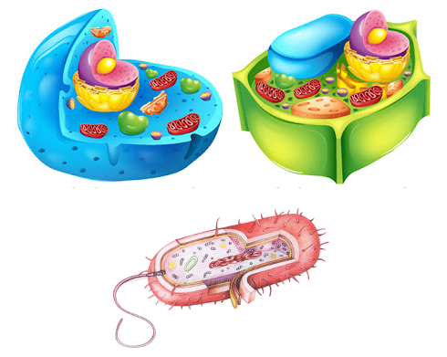
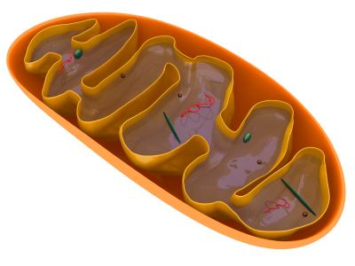
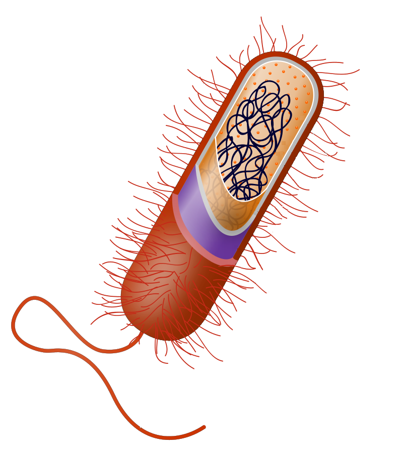
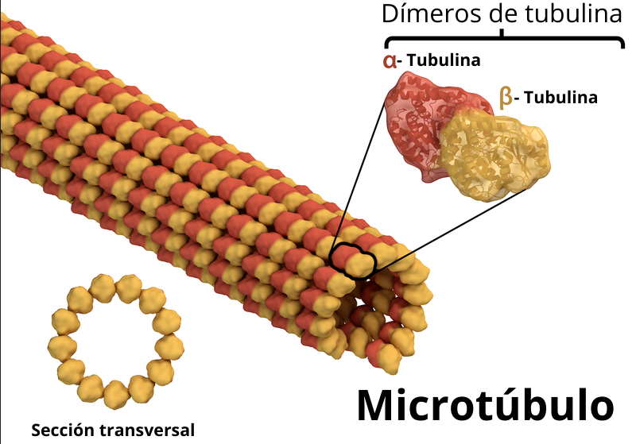

3
Activity Identify
Click on the active areas or icons in the image
{"typeGame":"Mapa","instructions":"","showMinimize":true,"showActiveAreas":false,"author":"","url":"../content/resources/20251021091936WBPFTI/celulas.png","authorImage":"","altImage":"","itinerary":{"showClue":false,"clueGame":"","percentageClue":40,"showCodeAccess":false,"codeAccess":"","messageCodeAccess":""},"points":[{"title":"Célula Vegetal","type":5,"x":0.7488372093023256,"y":0.20320387164365897,"x1":0,"y1":0,"footer":"","author":"","alt":"","url":"../content/resources/20251021091936NDFGPO/celula_vegetal.jpeg","video":"","iVideo":0,"fVideo":0,"audio":"","iconType":0,"question":"","id":"p913677299469","eText":"","map":{"id":"a913677299469","url":"../content/resources/20251021091936NDFGPO/celula_vegetal.jpeg","alt":"","author":"","pts":[{"title":"Cloroplasto","type":5,"x":0.6822916666666666,"y":0.5072815533980582,"x1":0,"y1":0,"footer":"","author":"","alt":"","url":"","video":"","iVideo":0,"fVideo":36000,"audio":"","iconType":0,"question":"En ellos tiene lugar la fotosíntesis","id":"p1362739311643","eText":"","map":{"id":"a1362739311643","url":"../content/resources/20251021091936NDFGPO/cloroplasto.png","alt":"","author":"","pts":[{"title":"Tilacoides","type":5,"x":0.40686922060766184,"y":0.4451456310679612,"x1":0,"y1":0,"footer":"","author":"","alt":"","url":"","video":"","iVideo":0,"fVideo":36000,"audio":"","iconType":0,"question":"Los tilacoides son sacos aplanados en los que tiene lugar las reacciones captadoras de luz de la fotosíntesis y de la fotofosforilación","id":"p854385193289","eText":"","map":{"id":"a854385193289","url":"../content/resources/20251021091936NDFGPO/memabrana_tilacoidal.jpeg","alt":"","author":"","pts":[{"title":"ATP Sintetasa","type":0,"x":0.8825,"y":0.6961941456231545,"x1":0,"y1":0,"footer":"El complejo ATP sintasa (EC 7.1.2.2) o complejo V o FoF1-ATP sintasa (F = factor de acoplamiento, en inglés coupling factor) es una enzima transmembranal que cataliza la síntesis de ATP a partir de ADP, un grupo fosfato y la energía suministrada por un flujo de protones (H+).","author":"","alt":"","url":"../content/resources/20251021091936NDFGPO/atpsintetasa.png","video":"","iVideo":0,"fVideo":36000,"audio":"","iconType":11,"question":"Cataliza la síntesis de ATP a partir de ADP, un grupo fosfato y la energía suministrada por un flujo de protones (H+).","id":"p235705443782","eText":"","map":{"id":"a235705443782","url":"","alt":"","author":"","pts":[],"active":0},"question_audio":"","slides":[{"id":"s90324146301","title":"","url":"","author":"","alt":"","footer":""}],"activeSlide":0,"color":"#000000","fontSize":"14","points":[{"x":0,"y":0},{"x":0.8825,"y":0},{"x":0.8825,"y":0.6961941456231545},{"x":0,"y":0.6961941456231545}],"tests":[],"activeTest":0},{"title":"NADP+ Reductasa","type":2,"x":0.62875,"y":0.40223089102997867,"x1":0,"y1":0,"footer":" El NADP+ reductasa, cataliza la reacción en la que se oxida la ferredoxina, y el NADP+ es reducido a NADPH. El NADPH tiene la energía como coenzima reducida, para contribuir al ciclo de Calvin como la fuente principal de potencia de reducción.","author":"","alt":"","url":"","video":"","iVideo":0,"fVideo":36000,"audio":"","iconType":13,"question":"Cataliza la reacción en la que se oxida la ferredoxina, y el NADP+ es reducido a NADPH D","id":"p191602805335","eText":"","map":{"id":"a191602805335","url":"","alt":"","author":"","pts":[{"id":"p114885764452","title":"","type":0,"url":"","video":"","x":0,"y":0,"x1":0,"y1":0,"footer":"","author":"","alt":"","iVideo":0,"fVideo":0,"eText":"","iconType":0,"question":"","map":{"id":"a114885764452","url":"","alt":"","author":"","pts":[],"active":0}}],"active":0},"question_audio":"","slides":[{"id":"s356366884407","title":"","url":"","author":"","alt":"","footer":""}],"activeSlide":0,"color":"#000000","fontSize":"14","points":[{"x":0,"y":0},{"x":0.62875,"y":0},{"x":0.62875,"y":0.40223089102997867},{"x":0,"y":0.40223089102997867}],"tests":[],"activeTest":0}],"active":0},"question_audio":"","color":"#000000","fontSize":"14","points":[{"x":0,"y":0},{"x":0.40686922060766184,"y":0},{"x":0.40686922060766184,"y":0.4451456310679612},{"x":0,"y":0.4451456310679612}],"tests":[],"activeTest":0},{"title":"ADNcp","type":0,"x":0.261558784676354,"y":0.633495145631068,"x1":0,"y1":0,"footer":"Los cloroplastos son orgánulos celulares que se encuentran en las plantas y algas verdes, y en cianobaterias. En estos orgánulos son el sitio de los procesos fotosintéticos de los organismos que los contienen. Los cloroplastos tienen su propio genoma al que denominamos ADNcp (cpDNA). ","author":"","alt":"","url":"../content/resources/20251021091936WBPFTI/adcl.png","video":"","iVideo":0,"fVideo":36000,"audio":"","iconType":15,"question":"Material genético de los cloroplastos","id":"p940888517154","eText":"","map":{"id":"a940888517154","url":"","alt":"","author":"","pts":[{"id":"p118839469365","title":"","type":0,"url":"","video":"","x":0,"y":0,"x1":0,"y1":0,"footer":"","author":"","alt":"","iVideo":0,"fVideo":0,"eText":"","iconType":0,"question":"","map":{"id":"a118839469365","url":"","alt":"","author":"","pts":[],"active":0}}],"active":0},"question_audio":"","slides":[{"id":"s776445801750","title":"","url":"","author":"","alt":"","footer":""}],"activeSlide":0,"color":"#000000","fontSize":"14","points":[{"x":0,"y":0},{"x":0.261558784676354,"y":0},{"x":0.261558784676354,"y":0.633495145631068},{"x":0,"y":0.633495145631068}],"tests":[],"activeTest":0}],"active":0},"question_audio":"","color":"#000000","fontSize":"14","points":[{"x":0,"y":0},{"x":0.6822916666666666,"y":0},{"x":0.6822916666666666,"y":0.5072815533980582},{"x":0,"y":0.5072815533980582}],"tests":[],"activeTest":0},{"title":"Pared celular con celulosa","type":1,"x":0.8559027777777778,"y":0.44281553990632583,"x1":0,"y1":0,"footer":"La pared celular es una capa resistente y rígida que soporta las fuerzas osmóticas y el crecimiento, y se localiza en el exterior.La pared celular es una capa resistente y rígida que soporta las fuerzas osmóticas y el crecimiento, y se localiza en el exterior de la membrana plasmática.En las plantas, la pared celular se compone, sobre todo, de un polímero de carbohidrato denominado celulosa, un polisacárido, y puede actuar también como almacén de carbohidratos para la célula. La pared celular es una capa resistente y rígida que soporta las fuerzas osmóticas y el crecimiento, y se localiza en el exterior de la membrana plasmática.En las plantas, la pared celular se compone, sobre todo, de un polímero de carbohidrato denominado celulosa, un polisacárido, y puede actuar también como almacén de carbohidratos para la célula. La pared celular es una capa resistente y rígida que soporta las fuerzas osmóticas y el crecimiento, y se localiza en el exterior de la membrana plasmática.En las plantas, la pared celular se compone, sobre todo, de un polímero de carbohidrato denominado celulosa, un polisacárido, y puede actuar también como almacén de carbohidratos para la célula. La pared celular es una capa resistente y rígida que soporta las fuerzas osmóticas y el crecimiento, y se localiza en el exterior de la membrana plasmática.En las plantas, la pared celular se compone, sobre todo, de un polímero de carbohidrato denominado celulosa, un polisacárido, y puede actuar también como almacén de carbohidratos para la célula. de la membrana plasmática.En las plantas, la pared celular se compone, sobre todo, de un polímero de carbohidrato denominado celulosa, un polisacárido, y puede actuar también como almacén de carbohidratos para la célula. ","author":"","alt":"","url":"","video":"https://youtu.be/0Qy7hWC1Qqw","iVideo":60,"fVideo":36000,"audio":"","iconType":11,"question":"Cubierta rígida que recubre la membrana plasmática de las células vegetales separándola del exterior.","id":"p683845043568","eText":"","map":{"id":"a683845043568","url":"","alt":"","author":"","pts":[{"id":"p1555219705785","title":"","type":0,"url":"","video":"","x":0,"y":0,"x1":0,"y1":0,"footer":"","author":"","alt":"","iVideo":0,"fVideo":0,"eText":"","iconType":0,"question":"","map":{"id":"a1555219705785","url":"","alt":"","author":"","pts":[],"active":0}}],"active":0},"question_audio":"","slides":[{"id":"s266697365897","title":"","url":"","author":"","alt":"","footer":""}],"activeSlide":0,"color":"#000000","fontSize":"14","points":[{"x":0,"y":0},{"x":0.8559027777777778,"y":0},{"x":0.8559027777777778,"y":0.44281553990632583},{"x":0,"y":0.44281553990632583}],"tests":[],"activeTest":0},{"id":"p660065221487","title":"Nucleolo","type":0,"url":"https://upload.wikimedia.org/wikipedia/commons/4/48/Nucleus%26Nucleolus.gif","video":"","x":0.6284722222222222,"y":0.17097087971215108,"x1":0,"y1":0,"footer":"Micrografía de un núcleo. Puede observarse un nucléolo de forma ovoidea, teñido más oscuro. La tinción intranucleolar no es homogénea, sino con zonas de grises y negro.]","author":"","alt":"","iVideo":0,"fVideo":36000,"eText":"","iconType":11,"question":"Estructura esférica situada dentro del núcleo en la que se fabrican los ribosomas","question_audio":"","map":{"id":"a660065221487","url":"","alt":"","author":"","pts":[{"id":"p110365126917","title":"","type":0,"url":"","video":"","x":0,"y":0,"x1":0,"y1":0,"footer":"","author":"","alt":"","iVideo":0,"fVideo":0,"eText":"","iconType":0,"question":"","question_audio":"","map":{"id":"a110365126917","url":"","alt":"","author":"","pts":[],"active":0}}],"active":0},"audio":"","slides":[{"id":"s1478155643178","title":"","url":"","author":"","alt":"","footer":""}],"activeSlide":0,"color":"#000000","fontSize":"14","points":[{"x":0,"y":0},{"x":0.6284722222222222,"y":0},{"x":0.6284722222222222,"y":0.17097087971215108},{"x":0,"y":0.17097087971215108}],"tests":[],"activeTest":0},{"id":"p261547666292","title":"Aparato de Golgi","type":1,"url":"","video":"https://youtu.be/8NrBbfFbaTY","x":0.4930555555555556,"y":0.6195792781496511,"x1":0,"y1":0,"footer":"Orgánulo que se encarga de reunir sustancias y mediante vesículas transportarlas a distintas partes de la célula o al exterior celular","author":"","alt":"","iVideo":0,"fVideo":36000,"eText":"","iconType":31,"question":"Orgánulo que se encarga de reunir sustancias y mediante vesículas transportarlas a distintas partes de la célula o al exterior celular","question_audio":"","map":{"id":"a261547666292","url":"../content/resources/20251021091936WBPFTI/autores_obra..png","alt":"","author":"","pts":[{"id":"p1126008802028","title":"fdasfdasf","type":5,"url":"","video":"","x":0.15311004784688995,"y":0.137961170974287,"x1":0,"y1":0,"footer":"","author":"","alt":"","iVideo":0,"fVideo":36000,"eText":"","iconType":11,"question":"","question_audio":"","map":{"id":"a1126008802028","url":"../content/resources/20251021091936WBPFTI/tests_mapa.png","alt":"","author":"","pts":[{"id":"p1188965269195","title":"fdasfdsa","type":4,"url":"","video":"","x":0.41603053435114506,"y":0.2136892966853762,"x1":0,"y1":0,"footer":"","author":"","alt":"","iVideo":0,"fVideo":36000,"eText":"","iconType":12,"question":"","question_audio":"","map":{"id":"a1188965269195","url":"","alt":"","author":"","pts":[],"active":0},"audio":""}],"active":0},"audio":""}],"active":0},"audio":"","slides":[{"id":"s918439410001","title":"","url":"","author":"","alt":"","footer":""}],"activeSlide":0,"color":"#000000","fontSize":"14","points":[{"x":0,"y":0},{"x":0.4930555555555556,"y":0},{"x":0.4930555555555556,"y":0.6195792781496511},{"x":0,"y":0.6195792781496511}],"tests":[],"activeTest":0},{"id":"p1549906026613","title":"Ribosomas","type":0,"url":"http://cienciasvirtual.com/apunteseso/biogeo4eso/celula/anexo/sintesisproteinas_files/TraduccionProteina1.gif","video":"","x":0.7430555555555556,"y":0.4059223360228307,"x1":0,"y1":0,"footer":"Orgánulos sin membrana que se encuentran en todas la células (procarióticas y eucarióticas). Composición: 50% ARNr y 50% proteínas","author":"","alt":"","iVideo":0,"fVideo":36000,"eText":"","iconType":31,"question":"Fabrican las protéinas","question_audio":"","map":{"id":"a1549906026613","url":"","alt":"","author":"","pts":[{"id":"p893523639307","title":"","type":0,"url":"","video":"","x":0,"y":0,"x1":0,"y1":0,"footer":"","author":"","alt":"","iVideo":0,"fVideo":0,"eText":"","iconType":0,"question":"","question_audio":"","map":{"id":"a893523639307","url":"","alt":"","author":"","pts":[],"active":0}}],"active":0},"audio":"","slides":[{"id":"s802845374992","title":"","url":"","author":"","alt":"","footer":""}],"activeSlide":0,"color":"#000000","fontSize":"14","points":[{"x":0,"y":0},{"x":0.7430555555555556,"y":0},{"x":0.7430555555555556,"y":0.4059223360228307},{"x":0,"y":0.4059223360228307}],"tests":[],"activeTest":0}],"active":2},"question_audio":"","color":"#000000","fontSize":"14","link":"","toolTip":"","points":[{"x":0,"y":0},{"x":0.7488372093023256,"y":0},{"x":0.7488372093023256,"y":0.20320387164365897},{"x":0,"y":0.20320387164365897}],"tests":[],"activeTest":0,"pointsd":[{"x":0,"y":0},{"x":0,"y":0},{"x":0,"y":0},{"x":0,"y":0}]},{"title":"Célula animal","type":5,"x":0.23565891472868217,"y":0.2474514563106796,"x1":0,"y1":0,"footer":"","author":"","alt":"","url":"../content/resources/20251021091936WBPFTI/animalc.png","video":"","iVideo":0,"fVideo":0,"audio":"","iconType":0,"question":"","id":"p437480348889","eText":"","map":{"pts":[{"title":"Centriolos","type":5,"x":0.6543624161073825,"y":0.5767961224305977,"x1":0,"y1":0,"footer":"","author":"","alt":"","url":"","video":"","iVideo":0,"fVideo":36000,"audio":"","iconType":20,"question":"Orgánulos que dirigen la separación de los cromosomas durante la reproducción celular","id":"p604252386391","eText":"","map":{"id":"a604252386391","url":"https://www.lifeder.com/wp-content/uploads/2020/06/centriolos-ilust-lifeder-im.jpg","alt":"","author":"","pts":[{"title":"Microtubulos","type":0,"x":0.3536269430051813,"y":0.4059223360228307,"x1":0,"y1":0,"footer":"Los microtúbulos son los filamentos más grandes de los tres elementos que forman el citoesqueleto de las células eucariontes, midiendo 25nm. Están hechos de proteínas llamadas tubulinas, que forman un tubo hueco. Las tubulinas se componen de dos subunidades: la alfa-tubulina y la beta-tubulina, que son los dímeros de la tubulina.","author":"","alt":"","url":"../content/resources/20251021091936WBPFTI/microtubulos.png","video":"","iVideo":0,"fVideo":36000,"audio":"","iconType":11,"question":"Filamentos más grandes de los tres elementos que forman el citoesqueleto de las células eucariontes","id":"p341958002454","eText":"","map":{"id":"a341958002454","url":"","alt":"","author":"","pts":[],"active":0},"question_audio":"","slides":[{"id":"s1003364403740","title":"","url":"","author":"","alt":"","footer":""}],"activeSlide":0,"color":"#000000","fontSize":"14","points":[{"x":0,"y":0},{"x":0.3536269430051813,"y":0},{"x":0.3536269430051813,"y":0.4059223360228307},{"x":0,"y":0.4059223360228307}],"tests":[],"activeTest":0}],"active":0},"question_audio":"","color":"#000000","fontSize":"14","points":[{"x":0,"y":0},{"x":0.6543624161073825,"y":0},{"x":0.6543624161073825,"y":0.5767961224305977},{"x":0,"y":0.5767961224305977}],"tests":[],"activeTest":0},{"id":"p145996132384","title":"Citoplasma","type":2,"url":"","video":"","x":0.37583892617449666,"y":0.6583495204888501,"x1":0,"y1":0,"footer":"","author":"","alt":"","iVideo":0,"fVideo":36000,"eText":"","iconType":33,"question":"Sustancia en la que se encuentran los orgánulos celulares","map":{"id":"a145996132384","url":"","alt":"","author":"","pts":[{"id":"p332331710311","title":"","type":0,"url":"","video":"","x":0,"y":0,"x1":0,"y1":0,"footer":"","author":"","alt":"","iVideo":0,"fVideo":0,"eText":"","iconType":0,"question":"","map":{"id":"a332331710311","url":"","alt":"","author":"","pts":[],"active":0}}],"active":0},"audio":"","question_audio":"","slides":[{"id":"s892495157716","title":"","url":"","author":"","alt":"","footer":""}],"activeSlide":0,"color":"#000000","fontSize":"14","points":[{"x":0,"y":0},{"x":0.37583892617449666,"y":0},{"x":0.37583892617449666,"y":0.6583495204888501},{"x":0,"y":0.6583495204888501}],"tests":[],"activeTest":0},{"id":"p1550139802350","title":"Núcleo celular","type":1,"url":"","video":"https://youtu.be/C4gj5hdan2k","x":0.5050335570469798,"y":0.08941748165389866,"x1":0,"y1":0,"footer":"El núcleo celular es una estructura membranosa que se encuentra normalmente en el centro de las células eucariotas. Contiene la mayor parte del material genético celular, organizado en varias moléculas extraordinariamente largas y lineales de ADN, con una gran variedad de proteínas, como las histonas,","author":"","alt":"","iVideo":0,"fVideo":36000,"eText":"","iconType":33,"question":"Controla las funciones de las células eucariotas a través del ADN","map":{"id":"a1550139802350","url":"","alt":"","author":"","pts":[{"id":"p1348391003788","title":"","type":0,"url":"","video":"","x":0,"y":0,"x1":0,"y1":0,"footer":"","author":"","alt":"","iVideo":0,"fVideo":0,"eText":"","iconType":0,"question":"","map":{"id":"a1348391003788","url":"","alt":"","author":"","pts":[],"active":0}}],"active":0},"audio":"Controla las funciones celulares a través del ADN","question_audio":"","slides":[{"id":"s232717830269","title":"","url":"","author":"","alt":"","footer":""}],"activeSlide":0,"color":"#000000","fontSize":"14","points":[{"x":0,"y":0},{"x":0.5050335570469798,"y":0},{"x":0.5050335570469798,"y":0.08941748165389866},{"x":0,"y":0.08941748165389866}],"tests":[],"activeTest":0},{"id":"p379546426375","title":"Membrana plasmática","type":1,"url":"","video":"https://youtu.be/28DjMjRV4Ss","x":0.0587248322147651,"y":0.44281553990632583,"x1":0,"y1":0,"footer":"La membrana plasmática, membrana celular, membrana citoplasmática o plasmalema , es una capa o bicapa lipídica de fosfolípidos y otras sustancias que delimita toda la célula, dividiendo el medio extracelular del intracelular (citoplasma). ","author":"","alt":"","iVideo":0,"fVideo":36000,"eText":"","iconType":37,"question":"Envoltura fina y elástica que separa la célula del medio","map":{"id":"a379546426375","url":"","alt":"","author":"","pts":[{"id":"p78855765486","title":"","type":0,"url":"","video":"","x":0,"y":0,"x1":0,"y1":0,"footer":"","author":"","alt":"","iVideo":0,"fVideo":0,"eText":"","iconType":0,"question":"","map":{"id":"a78855765486","url":"","alt":"","author":"","pts":[],"active":0}}],"active":0},"audio":"","question_audio":"","slides":[{"id":"s969148909731","title":"","url":"","author":"","alt":"","footer":""}],"activeSlide":0,"color":"#000000","fontSize":"14","points":[{"x":0,"y":0},{"x":0.0587248322147651,"y":0},{"x":0.0587248322147651,"y":0.44281553990632583},{"x":0,"y":0.44281553990632583}],"tests":[],"activeTest":0},{"id":"p1181427438775","title":"Mitocondria","type":5,"url":"","video":"","x":0.87248322147651,"y":0.3981553457315686,"x1":0,"y1":0,"footer":"","author":"","alt":"","iVideo":0,"fVideo":36000,"eText":"","iconType":20,"question":"","map":{"id":"a1181427438775","url":"../content/resources/20251021091936WBPFTI/mitocondria.jpeg","alt":"","author":"","pts":[{"id":"p709564498316","title":"Membrana mitoconrial interna","type":0,"url":"https://i.pinimg.com/originals/92/6b/e5/926be5f498fae0c918bc7db6cf22db8d.jpg","video":"","x":0.8600583090379009,"y":0.8525242777704035,"x1":0,"y1":0,"footer":"Las crestas mitocondriales son los repliegues internos de la membrana interna de una mitocondria, que definen en cierta manera compartimentos dentro de la matriz mitocondrial. Las mismas contienen incrustadas numerosas proteínas, incluida la ATP sintasa y diversas variedades de citocromos. Este arreglo geométrico asegura una gran superficie disponible para que se produzcan reacciones químicas dentro de la mitocondria. Ello posibilita que tenga lugar la respiración celular (respiración aeróbica dado que la mitocondria necesita oxígeno). ","author":"","alt":"","iVideo":0,"fVideo":36000,"eText":"","iconType":51,"question":"","map":{"id":"a709564498316","url":"","alt":"","author":"","pts":[],"active":0},"audio":"","question_audio":"","slides":[{"id":"s321210866492","title":"","url":"","author":"","alt":"","footer":""}],"activeSlide":0,"color":"#000000","fontSize":"14","points":[{"x":0,"y":0},{"x":0.8600583090379009,"y":0},{"x":0.8600583090379009,"y":0.8525242777704035},{"x":0,"y":0.8525242777704035}],"tests":[],"activeTest":0},{"id":"p1347165286768","title":"Membrana mitocondrial externa","type":0,"url":"https://upload.wikimedia.org/wikipedia/commons/thumb/7/7e/Mitocondria.png/500px-Mitocondria.png","video":"","x":0.17055393586005832,"y":0.4719417534985589,"x1":0,"y1":0,"footer":" Bicapa lipídica con numerosas proteínas asociadas, al igual que todas las demás membranas celulares que define el perímetro exterior liso de la mitocondria","author":"","alt":"","iVideo":0,"fVideo":36000,"eText":"","iconType":57,"question":"","map":{"id":"a1347165286768","url":"","alt":"","author":"","pts":[{"id":"p1324090870325","title":"","type":0,"url":"","video":"","x":0,"y":0,"x1":0,"y1":0,"footer":"","author":"","alt":"","iVideo":0,"fVideo":0,"eText":"","iconType":0,"question":"","map":{"id":"a1324090870325","url":"","alt":"","author":"","pts":[],"active":0}}],"active":0},"audio":"","question_audio":"","slides":[{"id":"s1374030170409","title":"","url":"","author":"","alt":"","footer":""}],"activeSlide":0,"color":"#000000","fontSize":"14","points":[{"x":0,"y":0},{"x":0.17055393586005832,"y":0},{"x":0.17055393586005832,"y":0.4719417534985589},{"x":0,"y":0.4719417534985589}],"tests":[],"activeTest":0},{"id":"p979866018832","title":"ADN mitocondrial","type":1,"url":"https://youtu.be/XKevzvMiB4Q","video":"https://youtu.be/XKevzvMiB4Q","x":0.5568513119533528,"y":0.38456311272185983,"x1":0,"y1":0,"footer":"","author":"","alt":"","iVideo":0,"fVideo":36000,"eText":"","iconType":53,"question":"Material genético presente en las mitocondrias","map":{"id":"a979866018832","url":"","alt":"","author":"","pts":[{"id":"p116738294892","title":"","type":0,"url":"","video":"","x":0,"y":0,"x1":0,"y1":0,"footer":"","author":"","alt":"","iVideo":0,"fVideo":0,"eText":"","iconType":0,"question":"","map":{"id":"a116738294892","url":"","alt":"","author":"","pts":[],"active":0}}],"active":0},"audio":"","question_audio":"","slides":[{"id":"s1124165161538","title":"","url":"","author":"","alt":"","footer":""}],"activeSlide":0,"color":"#000000","fontSize":"14","points":[{"x":0,"y":0},{"x":0.5568513119533528,"y":0},{"x":0.5568513119533528,"y":0.38456311272185983},{"x":0,"y":0.38456311272185983}],"tests":[],"activeTest":0}],"active":2},"audio":"","question_audio":"","color":"#000000","fontSize":"14","points":[{"x":0,"y":0},{"x":0.87248322147651,"y":0},{"x":0.87248322147651,"y":0.3981553457315686},{"x":0,"y":0.3981553457315686}],"tests":[],"activeTest":0}],"url":"../content/resources/20251021091936WBPFTI/animalc.png","alt":"","author":"","active":4},"question_audio":"","color":"#000000","fontSize":"14","points":[{"x":0,"y":0},{"x":0.23565891472868217,"y":0},{"x":0.23565891472868217,"y":0.2474514563106796},{"x":0,"y":0.2474514563106796}],"tests":[],"activeTest":0},{"title":"Céĺula Procariota","type":5,"x":0.537984496124031,"y":0.7134708737864077,"x1":0,"y1":0,"footer":"","author":"","alt":"","url":"../content/resources/20251021091936WBPFTI/Prokaryote_cell-es.svg.png","video":"","iVideo":0,"fVideo":0,"audio":"","iconType":0,"question":"","id":"p1100680206714","eText":"","map":{"pts":[{"title":"Cromosoma bacteriano","type":1,"x":0.7058823529411765,"y":0.24676374416906857,"x1":0,"y1":0,"footer":"","author":"","alt":"","url":"","video":"https://youtu.be/Hp-1HlkT1jA","iVideo":0,"fVideo":36000,"audio":"","iconType":71,"question":"Molécula de ácido desoxirribonucleico (ADN) de doble cadena y circular presente en las células procariotas","id":"p115787907945","eText":"","map":{"id":"a115787907945","url":"","alt":"","author":"","pts":[],"active":0},"question_audio":"","slides":[{"id":"s1035564742383","title":"","url":"","author":"","alt":"","footer":""}],"activeSlide":0,"color":"#000000","fontSize":"14","points":[{"x":0,"y":0},{"x":0.7058823529411765,"y":0},{"x":0.7058823529411765,"y":0.24676374416906857},{"x":0,"y":0.24676374416906857}],"tests":[],"activeTest":0},{"id":"p212612559755","title":"Cápsula bacteriana","type":2,"url":"","video":"","x":0.5468409586056645,"y":0.5788025791205249,"x1":0,"y1":0,"footer":"","author":"","alt":"","iVideo":0,"fVideo":36000,"eText":"","iconType":71,"question":"Es una capa externa y viscosa frecuente en las bacterias patógenas","question_audio":"","map":{"id":"a212612559755","url":"","alt":"","author":"","pts":[{"id":"p1001573920350","title":"","type":0,"url":"","video":"","x":0,"y":0,"x1":0,"y1":0,"footer":"","author":"","alt":"","iVideo":0,"fVideo":0,"eText":"","iconType":0,"question":"","question_audio":"","map":{"id":"a1001573920350","url":"","alt":"","author":"","pts":[],"active":0}}],"active":0},"audio":"","slides":[{"id":"s282090291286","title":"","url":"","author":"","alt":"","footer":""}],"activeSlide":0,"color":"#000000","fontSize":"14","points":[{"x":0,"y":0},{"x":0.5468409586056645,"y":0},{"x":0.5468409586056645,"y":0.5788025791205249},{"x":0,"y":0.5788025791205249}],"tests":[],"activeTest":0},{"id":"p649436296491","title":"Pared bacteriana","type":1,"url":"","video":"https://youtu.be/gRThrH94OpI","x":0.4662309368191721,"y":0.4584142296059618,"x1":0,"y1":0,"footer":"","author":"","alt":"","iVideo":0,"fVideo":36000,"eText":"","iconType":73,"question":"Se encarga de mantener la forma de la bacteria y protegerla frente a los cambios de presión osmótica del medio.","question_audio":"","map":{"id":"a649436296491","url":"","alt":"","author":"","pts":[{"id":"p718970259331","title":"","type":0,"url":"","video":"","x":0,"y":0,"x1":0,"y1":0,"footer":"","author":"","alt":"","iVideo":0,"fVideo":0,"eText":"","iconType":0,"question":"","question_audio":"","map":{"id":"a718970259331","url":"","alt":"","author":"","pts":[],"active":0}}],"active":0},"audio":"","slides":[{"id":"s547128763099","title":"","url":"","author":"","alt":"","footer":""}],"activeSlide":0,"color":"#000000","fontSize":"14","points":[{"x":0,"y":0},{"x":0.4662309368191721,"y":0},{"x":0.4662309368191721,"y":0.4584142296059618},{"x":0,"y":0.4584142296059618}],"tests":[],"activeTest":0},{"id":"p869702617970","title":"Flagelos","type":1,"url":"","video":"https://youtu.be/GLcXS87AaAk","x":0.08061002178649238,"y":0.6564724820331462,"x1":0,"y1":0,"footer":"Apéndices filamentosos muy largos y finos, que permite el desplazamiento de la bacteria. Formados por una proteína llamada flagelina, tienen una estructura más simple que el de las eucariotas. Según dónde se sitúen los flagelos, se distinguen las siguientes bacterias: Monótricas: sólo tienen un flagelo. (A)Lofótricas: tienen varios flagelos, pero muy cercanos. (B)Anfítricas: tienen un solo flagelo en cada extremo opuesto. (C)Perítricas: tienen varios flagelos repartidos por toda la superficie bacteriana. (D)","author":"","alt":"","iVideo":26,"fVideo":36000,"eText":"","iconType":75,"question":" Apéndices filamentosos muy largos y finos, que permite el desplazamiento de la bacteria.","question_audio":"","map":{"id":"a869702617970","url":"","alt":"","author":"","pts":[{"id":"p1595588494091","title":"","type":0,"url":"","video":"","x":0,"y":0,"x1":0,"y1":0,"footer":"","author":"","alt":"","iVideo":0,"fVideo":0,"eText":"","iconType":0,"question":"","question_audio":"","map":{"id":"a1595588494091","url":"","alt":"","author":"","pts":[],"active":0}}],"active":0},"audio":"","slides":[{"id":"s474928226019","title":"","url":"","author":"","alt":"","footer":""}],"activeSlide":0,"color":"#000000","fontSize":"14","points":[{"x":0,"y":0},{"x":0.08061002178649238,"y":0},{"x":0.08061002178649238,"y":0.6564724820331462},{"x":0,"y":0.6564724820331462}],"tests":[],"activeTest":0},{"id":"p908785566848","title":"Fibrias","type":0,"url":"https://www.animales.website/wp-content/uploads/2017/05/Fimbrias.png","video":"","x":0.7407407407407407,"y":0.09336568591664138,"x1":0,"y1":0,"footer":"tubos cortos y huecos, formados por proteínas que aparecen en la superficie externa de algunas bacterias Gram negativas. Las fimbrias son cortas y muy numerosas, y sirven para que la célula pueda fijarse al sustrato.","author":"","alt":"","iVideo":0,"fVideo":36000,"eText":"","iconType":75,"question":"Permiten a ciertas bacterias fijarse al sustrato","question_audio":"","map":{"id":"a908785566848","url":"","alt":"","author":"","pts":[{"id":"p133019640804","title":"","type":0,"url":"","video":"","x":0,"y":0,"x1":0,"y1":0,"footer":"","author":"","alt":"","iVideo":0,"fVideo":0,"eText":"","iconType":0,"question":"","question_audio":"","map":{"id":"a133019640804","url":"","alt":"","author":"","pts":[],"active":0}}],"active":0},"audio":"","slides":[{"id":"s194256974943","title":"","url":"","author":"","alt":"","footer":""}],"activeSlide":0,"color":"#000000","fontSize":"14","points":[{"x":0,"y":0},{"x":0.7407407407407407,"y":0},{"x":0.7407407407407407,"y":0.09336568591664138},{"x":0,"y":0.09336568591664138}],"tests":[],"activeTest":0}],"url":"../content/resources/20251021091936WBPFTI/Prokaryote_cell-es.svg.png","alt":"","author":"","active":4},"question_audio":"","color":"#000000","fontSize":"14","points":[{"x":0,"y":0},{"x":0.537984496124031,"y":0},{"x":0.537984496124031,"y":0.7134708737864077},{"x":0,"y":0.7134708737864077}],"tests":[],"activeTest":0}],"isScorm":0,"textButtonScorm":"Guardar la puntuación","repeatActivity":true,"weighted":100,"textAfter":"","evaluationG":2,"selectsGame":[{"typeSelect":0,"numberOptions":4,"quextion":"","options":["","","",""],"solution":"","solutionWord":"","percentageShow":35,"msgError":"","msgHit":""}],"isNavigable":true,"showSolution":true,"timeShowSolution":3,"version":3,"percentajeIdentify":100,"percentajeShowQ":100,"percentajeQuestions":100,"autoShow":false,"autoAudio":true,"optionsNumber":0,"evaluation":false,"evaluationID":"","id":"20251021091936WBPFTI","order":"","hideScoreBar":false,"hideAreas":false,"msgs":{"msgSubmit":"Enviar","msgIndicateWord":"Proporcione una palabra o expresión","msgClue":"¡Genial! La pista es:","msgErrors":"Errores","msgHits":"Aciertos","msgScore":"Puntuación","msgWeight":"Peso","msgMinimize":"Minimizar","msgMaximize":"Maximizar","msgFullScreen":"Pantalla Completa","msgNoImage":"Pregunta sin imágenes","msgSuccesses":"¡Correcto! | ¡Excelente! | ¡Genial! | ¡Muy bien! | ¡Perfecto!","msgFailures":"¡No era eso! | ¡Incorrecto! | ¡No es correcto! | ¡Lo sentimos! | ¡Error!","msgTryAgain":"Necesita al menos un %s% de respuestas correctas para conseguir la información. Vuelva a intentarlo.","msgEndGameScore":"Antes de guardar la puntuación comience la partida.","msgScoreScorm":"La puntuación no se puede guardar porque esta página no forma parte de un paquete SCORM.","msgPoint":"Point","msgAnswer":"Responder","msgOnlySaveScore":"¡Sólo puede guardar la puntuación una vez!","msgOnlySave":"Sólo puede guardar una vez","msgInformation":"Información","msgYouScore":"Su puntuación","msgOnlySaveAuto":"Su puntuación se guardará después de cada pregunta. Sólo puede jugar una vez.","msgSaveAuto":"Su puntuación se guardará automáticamente después de cada pregunta.","msgSeveralScore":"Puede guardar la puntuación tantas veces como quiera","msgYouLastScore":"La última puntuación guardada es","msgActityComply":"Ya ha realizado esta actividad.","msgPlaySeveralTimes":"Puede realizar esta actividad cuantas veces quiera","msgClose":"Cerrar","msgPoints":"puntos","msgPointsA":"Puntos","msgQuestions":"Preguntas","msgAudio":"Audio","msgAccept":"Aceptar","msgYes":"Sí","msgNo":"No","msgShowAreas":"Mostrar áreas activas","msgShowTest":"Mostrar cuestionario","msgGoActivity":"Hac clic aqui para realizar esta actividad","msgSelectAnswers":"Selecciona las opciones correctas y pulsa sobre el botón Responder","msgCheksOptions":"Marca todas las opciones en el orden adecuado y pulsa sobre el botón Responder","msgWriteAnswer":"Escribe la respuesta correcta y pulsa sobre el botón Responder","msgIdentify":"Identifica","msgSearch":"Encuentra","msgClickOn":"Haz clic sobre","msgReviewContents":"Debes repasar todos los contenidos de la actividad antes de completar el cuestionario","msgScore10":"¡Todo perfecto! ¡Enhorabuena! ¿Deseas repetir esta actividad?","msgScore4":"No has superado esta prueba. Deberías repasar sus contenidos e inténtalo de nuevo. ¿Deseas repetir esta actividad?","msgScore6":"¡Estupendo! Has superado la prueba, pero seguro que lo puedes mejorar. ¿Deseas repetir esta actividad?","msgScore8":"¡Casi perfecto! Aún lo puedes hacer mejor ¿Deseas repetir esta actividad?","msgNotCorrect":"¡No es correcto! Has hecho clic sobre","msgNotCorrect1":"¡No es cierto! La respuesta correcta es","msgNotCorrect2":"y la respuesta correcta es","msgNotCorrect3":"¡Prueba otra vez!","msgAllVisited":"¡Genial! Has visitado todos los puntos","msgCompleteTest":"Puedes completar el cuestionario","msgPlayStart":"Pulse aquí para comenzar","msgSubtitles":"Subtítulos","msgSelectSubtitles":"Selecciona un archivo de subtítulos. Formatos válidos:","msgNumQuestions":"Número de preguntas","msgHome":"Inicio","msgReturn":"Volver","msgCheck":"Comprobar","msgUncompletedActivity":"Actividad no completada","msgSuccessfulActivity":"Actividad superada. Puntuación: %s","msgUnsuccessfulActivity":"Actividad no superada. Puntuación: %s","msgTypeGame":"Mapa"}}








Ferredoxin is a small iron-containing protein that acts as the electron acceptor associated with the Photosystem I in the photosynthesis. Accepts an electron and is reduced, giving it the ability to transmit those electrons as part of the electron transport process. NADP+ reductase catalyzes the reaction in which ferredoxin is oxidized, and NADP+ is reduced to NADPH. NADPH has the energy as a reduced coenzyme, to contribute to the Calvin cycle as the main source of reducing power.
The cytoplasm is the part of the protoplasm in a eukaryotic and prokaryotic cell that is located between the cell nucleus and the plasma membrane. It consists of a very fine colloidal dispersion with a granular appearance, the cytosol or hyaloplasm, and a variety of cellular organelles that perform different functions.
Its function is to house the cellular organelles and contribute to their movement. The cytosol is the site of many of the metabolic processes that occur in cells.
The cytoplasm is sometimes divided into a gelatinous outer region, close to the membrane, and involved in cell movement, called ectoplasm; and a more fluid inner part called endoplasm where most of the organelles are located. The cytoplasm is found in prokaryotic cells as well as in eukaryotic cells and contains several nutrients that managed to cross the plasma membrane, thus reaching the cell's organelles.
It is an outer and viscous layer with a thickness ranging between 100 and 400 Å. It is very common in pathogenic bacteria because it facilitates adhesion to host tissues. It is not present in all prokaryotes.
This capsule is rich in polysaccharides and protein molecules.
The bacterial capsule is attributed the following functions:
- Attaches the pathogenic bacterium to its host.
- Protects the bacterium from the desiccation of the environment.
- Regulates the processes of water and nutrient exchange, in addition to serving as a nutrient store.
- Defense against antibodies, bacteriophages and phagocytic cells.
- Allows the formation of bacterial colonies.
Your browser is not compatible with this tool.


.jpeg)

{kind=link}
{kind=link}
{kind=link}
{kind=link}
{kind=link}
{kind=link}